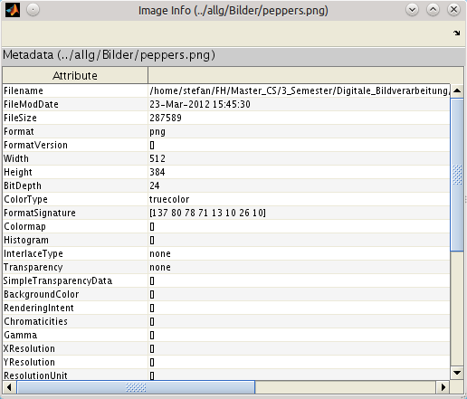
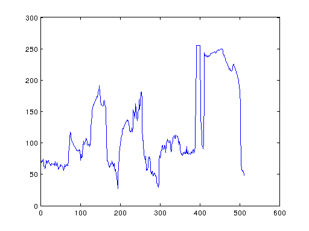
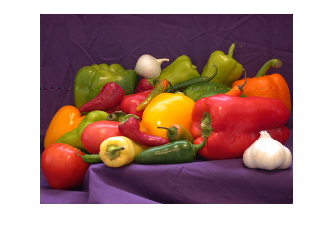

Contents
1. Bild einlesen
I = imread('../allg/Bilder/peppers.png');
2. Bild abspeichern
imwrite(I,'../allg/Bilder/peppers.png');
3. Bildinformationen ermitteln
imageinfo('../allg/Bilder/peppers.png')

4. als JPEG-Datei speichern
imwrite(I,'../allg/Bilder/peppers.jpg','jpg');
5. Farbkanäle auftrennen
R = I(:,:,1);
G = I(:,:,2);
B = I(:,:,3);
6. Zeile als Grauwertfunktion darstellen
Gr = rgb2gray(I);
figure, plot(Gr(150,:));

7. Zeile im Bild markieren
figure, imshow(I);
hold on;
x = 1:size(I,2);
y = 150;
plot(x,y,'-');
